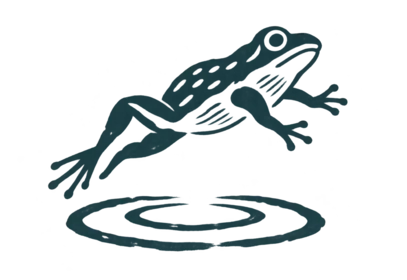
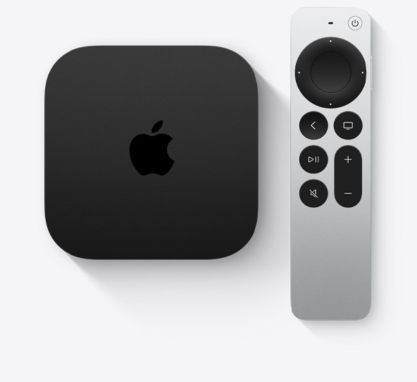

What's bigger than Max?
Which name ranks higher? Start with six AI model pairs, or try putting three names in order.
Score
Your score
Rank three names from a lineup you haven’t seen yet.
Try another category
Case Studies
What comes after Opus?
A haiku in English usually has three lines and a sonnet has fourteen, so length gets you from Haiku to Sonnet. That analogy runs out at Opus, a work of any length. Reading it as magnum opus shifts the measure to importance. By Fable, the name describes the content of a story. A fable earns its name by teaching a moral and can easily be shorter than the sonnet it outranks.

Poetic formOften 3 lines in English. Traditionally 17 sound units (5–7–5) in Japanese.
 Poetic form
Poetic formA poem of 14 lines.
 Creative work
Creative workA work of art. A magnum opus is its creator’s defining work.
A story, usually short, that teaches a moral.
A mythos is a body of stories, which sounds like a step up from a single fable. Anthropic puts the two at the same level. Mythos 5.2 offers the same capabilities as Fable 5.2, with access limited to verified organizations.
Each Claude model family has its own version numbers. The jump from Opus 5 to 5.5 can hint at how much Opus improved over its previous release, but it tells you little about how Opus compares with Fable. Fable 5.2 came out after Opus 5.5 and sits a tier above it.
| Version | {% for family in page.claude_families %}{{ family }} | {% endfor %}{{ release.version }} | {% for family in page.claude_families %} {% assign released_on = release.dates[family] %}{% if released_on %} {% unless seen_families contains family %}{% assign seen_families = seen_families | push: family %}{% endunless %} {% elsif family == 'Haiku' and release.version == '5' %} Skipped {% endif %} | {% endfor %} {% endfor %}
|---|
Sources · Claude model overview · Public release history · Opus 5.5 release · Fable 5.2 release · Fable and Mythos · Haiku Foundation · Earlier essay on naming
Neon is heavier than carbon
Google puts Carbon above Neon and Hydrogen in its Gemini lineup. If you tried to work that out from a periodic table, you’d pick Neon on the grounds that it’s heavier, has a higher atomic number, and sits farther to the right. Going by row would leave you with a tie between Carbon and Neon. There’s no obvious relationship between a model’s tier and its element’s position on the periodic table.
Gemini on the periodic table
From Carbon (#1), you go right to Neon (#2), then all the way back to Hydrogen (#3).
Sources · Gemini 4 model tiers · IUPAC periodic table and atomic weights
Sol, Terra, Luna, and Astra
With three models named for the Sun, Earth, and Moon, you could be forgiven for thinking they were ranked by distance from Earth. That would put Luna ahead of Terra, whereas ranking them by mass gives the order OpenAI chose for its original lineup.
- Model hierarchy
- {{ astra }} > {{ sol }} > {{ terra }} > {{ luna }}
- By mass
- {{ astra }} heavier stars > {{ sol }} > {{ astra }} lighter stars > {{ terra }} > {{ luna }}
- By distance from Earth
- {{ astra }} ≥ {{ sol }} > {{ luna }} > {{ terra }}
By the time Astra was added, OpenAI had already used the Sun for its most capable model. Alpha Centauri might have worked as a successor, provided you knew it was the nearest star system beyond the Sun and guessed that distance now mattered. The trouble with Astra (“stars”) is that the Sun itself qualifies, and while every other star is farther away, some are heavier than the Sun and some are lighter.
OpenAI says it used an internal model more capable than the original Astra for its Navier–Stokes research. Bel has circulated as a possible codename, and OpenAI has yet to link the name to that model.
Sources · Sol, Terra, and Luna · Astra launch · Astra and Sol · The Sun and Alpha Centauri · Star types and masses · OpenAI’s internal research model · Bel rumor
Max wasn't the maximum.
Apple’s Pro makes sense as a label for a chip aimed at power users, but Max is a harder name to explain once there’s an Ultra above it. On an iPhone the same word does a different job, since Pro Max tells you which Pro has the bigger screen.
Both versions of the iPhone 14 came with a choice of a 6.1- or 6.7-inch screen. Choosing the larger screen gave you a 14 Plus if you bought the standard phone and a Pro Max if you bought the Pro. A few years earlier, Apple had simply called the larger iPhone XS the XS Max.
The $249 SE and the $799 Ultra were both on their third generation, with the $399 Series 11 in between. If you want to know which watch is a step up, the useful part of the name is the bit before the number.
You’d expect the Air to be the lightest MacBook to carry, but the 13-inch Air and the $599 Neo each weigh 2.7 pounds. The Air is thinner, while the Neo has the smaller footprint. “Neo” means “new,” which makes sense on launch day and gets a little stranger with every year you own it.
When Studio Display XDR replaced Pro Display XDR, the higher-end monitor lost the word Pro. Both new displays had 27-inch 5K screens, with XDR marking the upgrade to a brighter mini-LED panel.


The subscription used to be called Apple TV+. Once Apple dropped the plus sign, you could subscribe to Apple TV through the Apple TV app on an Apple TV 4K.
What comes after Ultra?
Apple joined two M2 Max dies and called the result Ultra. What would you call the next chip?
Sources · M2 Ultra · iPhone 14 and 14 Plus · iPhone 14 Pro and Pro Max · iPhone XS Max · Watch lineup · MacBook Neo · Neo specs · 13-inch Air specs · Studio displays · Apple TV subscription · Apple TV app and hardware
Which USB-C cable did you mean?
A common port pushed the complexity one level deeper, into what each cable can carry.
A 60 W cable and a 240 W cable can have identical USB-C plugs. The three below can each carry up to 240 W in either direction. The devices negotiate how much to use. If your monitor offers 65 W and your laptop requests 45 W, they can settle on 45 W. Swap the Thunderbolt cable for Apple’s Charge Cable and the laptop keeps charging, but the screen goes dark.
Legacy connectors still specified
 USB-AComputer ports
USB-AComputer ports Standard-BPrinters
Standard-BPrinters- USB 2 Micro-BOlder phones
New connector certification ended in 2021
- Mini-BOlder cameras
 USB 3 Micro-BPortable drives
USB 3 Micro-BPortable drives

USB-C port
Plugable Charge-Only
Power onlyNo file transfer or videoApple USB-C Charge Cable
480 MbpsUSB 2 maximum · no videoApple Thunderbolt 5 Pro Cable
80 GbpsUSB4 maximum · DisplayPort 2.1 video
Even among data cables, the same plug can carry USB 2, USB 3 or USB4. USB 3.2 alone has 5, 10 and 20 Gbps modes. To get a particular speed or carry video, the cable and the ports at both ends must support it. With the same 10 Gbps Mac port and Thunderbolt cable, swapping the phone changes the speed limit.
- iPhone 16 · USB 2
- Up to 480 Mbps
- iPhone 16 Pro · USB 3
- Up to 10 Gbps
Sources · USB-IF guide to USB-C names and capabilities · USB-C cable power ratings · USB Power Delivery · USB 3.2 speeds · USB-IF connector notices (Mini-B use is still permitted) · Plugable charge-only cable · Apple Charge Cable · Apple Thunderbolt cables · iPhone 16 · iPhone 16 Pro
Legacy plug illustrations cropped from Matthew Wynn’s USB connector diagram, CC BY-SA 4.0.

What comes after PlayStation 4?
Numbering the PlayStation generations makes their order easy to read. A Slim usually comes a few years into a generation, once the hardware can fit in a smaller case. The PS3 launched in 2006. By 2009, Sony had redesigned its chips, power supply and cooling system to make the PS3 Slim. Pro means more graphics power within the same generation.
Canon counts twice
The number before the D identifies the camera family. The 1D was Canon’s professional flagship, while the 7D paired a smaller APS-C sensor with fast continuous shooting. The Roman numeral counts generations within each family, so a 5D Mark III is the third 5D. The jump from the 5D in 2005 to the 7D in 2009 left room for another family. Canon filled that gap in 2012 with the 6D, a more affordable way into full-frame photography.
Seven years after Canon’s flagship 1D Mark III came out, the less expensive 7D Mark II could match its 10 frames per second at twice the resolution. As that performance trickled down, Canon gave photographers a reason to keep buying premium bodies by reserving features like heavier weather sealing and dual card slots for the higher tiers. If you shot weddings in 2017 and wanted a backup of every photo as you took it, Canon’s decision to give the new 6D Mark II just one slot steered you toward the more expensive 5D Mark IV, even though it was a year older.
Sources · Canon Camera Museum · EOS-1D Mark III · Canon’s 5D history · EOS 5D Mark IV specifications · EOS 6D · EOS 6D Mark II · EOS 7D · EOS 7D Mark II
What qualifies as a Series A?
Series A comes before Series B, but what it takes to raise an A depends on when you ask. Early sales might persuade an investor in a boom. In a tighter market, the same investor might want to see those customers renew before writing the check.
- BootstrappedFounders’ money or revenue
- Pre-seedUsually a small first raise
- SeedMoney to build and test the product
- Series AThe lettered rounds begin
- … Series NDatabricks’ proposed round
When Databricks was in funding talks in November 2026, Exec Sum called the proposed round a Series N. Counting one letter at a time would give a company 26 rounds before it ran out of alphabet. Companies can skip letters, though. Forge records a $25 million Series Z for Invoca in 2021, between its Series E and Series F.
Sources · Databricks funding talks · Exec Sum’s “Series N” description · Carta on the changing Series A bar · Invoca’s funding history
What’s in a name?
Apple once made its Macs easier to name by simplifying the lineup. In the late 1990s, its plan was to give consumers a choice of one desktop or one laptop and offer professionals the same two choices. If you wanted a consumer laptop, “iBook” settled it. As Apple added screen sizes and chip options, the names had to do more work. In a 14-inch MacBook Pro with an M4 Pro, the first “Pro” names the laptop and the second names the chip.
| Naming approach | What the name tells you | What you still have to check |
|---|---|---|
| HaikuBorrow a metaphor | A sense of scale. A three-line poem suggests a small model for quick jobs. | Which model is stronger? Knowing what a fable is won’t tell you whether it outranks Opus. |
| PS4 → PS5Number each generation | Which came later. The 5 puts this console one generation past the PS4. | How big is the jump? Every generation adds one to the name, however much the hardware improves. |
| Y → Z ↷ AAlphabetize the releases | The next initial. After Yakkety Yak you could predict Ubuntu’s next release would start with Z. The animal was anyone’s guess. | Which came first, A or Z? Ubuntu ran out of letters at Zesty Zapus (17.04) and wrapped back to Artful Aardvark (17.10). The version number settles it by giving the year and month of release. |
| Version 2.4.1, major 2, minor 4, patch 1 Semantic versioning (SemVer) | What kind of update it is. Once a public API reaches 1.0, a major bump signals a breaking change. A minor release can add compatible features, and a patch delivers compatible bug fixes. | Does my code use the part that changed? Going from 2.4.1 to 3.0.0 might take an afternoon of edits or none at all. The release notes tell you which calls to check. |
| iPad / USB-CUse one familiar name | What to ask for. “iPad” gets you to the right shelf. “USB-C” tells you which plug fits. |
Which one do I own? Buying a case can take two lookups. In Settings, tap the part number to reveal the iPad’s model number, then match it to a generation. Find the model number · Identify the iPad Which case fits my iPad?A2602 takes a case for the 9th-generation iPad. A2696 takes one for the 10th. Will this cable drive my monitor?Apple’s USB-C Charge Cable fits but carries no video. Its Thunderbolt 5 Pro Cable carries DisplayPort video through the same plug. Compare Apple’s cables |
| 40 Gbps · 240 WPrint the ratings | How much it can carry. Now you can compare the cable’s data speed and power rating separately. | What will my setup deliver? A 240 W cable plugged into a 65 W charger still tops out at 65 W. |
| 5D · 6D · 7DLeave gaps between tiers | Where a new model fits. Canon could slot the 6D between two cameras you already knew by name. | Which one is newest? You’d need the release dates to know the 6D came out after both its neighbors. |
Sources · Steve Jobs on Apple’s four-product strategy · MacBook Pro chip options · Ubuntu release history · Semantic Versioning 2.0.0 specification · USB-IF cable ratings
About the quiz
Each question asks about one specific comparison, whether that’s the number of cores in a chip, the size of an olive, or the cabin you’ll sit in on a flight. After each guess you can see where the ranking comes from.
The earlier essay, A Magnum Opus Leaves Nowhere to Go, was written when Sol was still the top model.